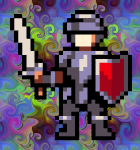

RaidGuild archive / 2020
Loading archive transmission…
A guild is the sum of its raiders.
Raid Credits
Revisit the playful end-credit energy of the original member showcase, rebuilt as a public Portal module with no account, wallet, or transaction required.
Original Raid Credits animation · decorative, muted loop
Local party builder
Choose your raid disciplines
The legacy live roster is retired. This resilient local deck celebrates the disciplines that turn a brief into a launch—without fetching member data.
Original soundtrack
Press play when you’re ready
“Voyager” returns from the original experience. Audio never autoplays: assemble a party, then start the full-screen credits when you are ready.

Archive onlyHistorical NFT context
Rainbow Warrior
Lord of Love and Support · original level 1 badge
The Rainbow Warrior NFT was an optional part of the original 2020 experience. This public archive cannot connect a wallet, request funds, mint tokens, or submit a transaction.
About this archive
The artwork, animation, and soundtrack are preserved from the original Raid Credits project. The live member service and blockchain features were intentionally removed for this Portal edition.